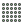
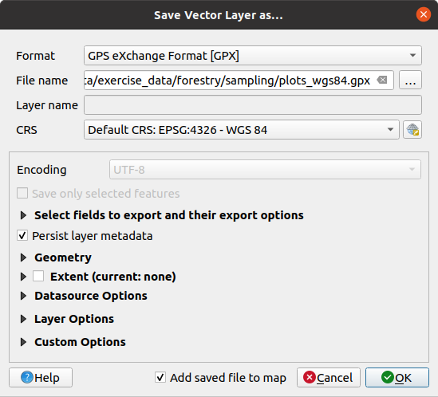

14.5. သင်ခန်းစာ - စနစ်တကျနမူနာကောက်ယူခြင်းဒီဇိုင်း (Lesson: Systematic Sampling Design)
Forest stand များကိုကိုယ်စားပြုသော polygon များကို digitize ပြုလုပ်ခဲ့ပြီးဖြစ်ပါသည်၊ သို့သော် သစ်တောနှင့်ပတ်သက်သော အချက်အလက်များမပါရှိသေးပါ။ သစ်တောဧရိယာတစ်ခုလုံးကို inventory (သယံဇာတစာရင်းကောက်ယူခြင်း) ပြုလုပ်ပြီး သစ်တော parameter များကို ခန့်မှန်းရန်အတွက် survey တစ်ခုကို ဒီဇိုင်းရေးဆွဲနိုင်ပါသည်။ ဤသင်ခန်းစာတွင် စနစ်တကျဖြစ်သော နမူနာကွက်များကို ဖန်တီးမည်ဖြစ်ပါသည်။
သစ်တော inventory ကို စတင်အစီအစဉ်ချမှတ်သောအခါ ရည်ရွယ်ချက်များ၊ အသုံးပြုမည့် နမူနာကွက်အမျိုးအစားနှင့် ကောက်ယူမည့် data များကို ရှင်းရှင်းလင်းလင်းသတ်မှတ်ပေးရန် အရေးကြီးပါသည်။ ထိုအရာများသည် သစ်တောအမျိုးအစားနှင့် စီမံခန့်ခွဲမှု ရည်ရွယ်ချက်များအပေါ်တွင် မူတည်ပြီး သစ်တောဗဟုသုတရှိသူတစ်ဦးဦးမှ ဂရုတစိုက် အစီအစဉ်ရေးဆွဲသင့်ပါသည်။ ဤသင်ခန်းစာတွင် systematic sampling plot ဒီဇိုင်းတစ်ခုပေါ်တွင် အခြေခံသော inventory သဘောတရားတစ်ခုကို အကောင်အထည်ဖော်မည်ဖြစ်ပါသည်။
ဤသင်ခန်းစာအတွက် ရည်မှန်းချက်- သစ်တောဧရိယာတွင် စာရင်းကောက်ယူရန် systematic sampling plot ဒီဇိုင်းတစ်ခုကို ဖန်တီးရန်။
14.5.1. သစ်တောသယံဇာတစာရင်းကောက်ယူခြင်း (Inventorying the Forest)
အမျိုးမျိုးသော ရည်ရွယ်ချက်များနှင့်အခြေအနေများပေါ်မူတည်ပြီး သစ်တောများကို inventory ကောက်ယူရန် နည်းလမ်းများစွာရှိပါသည်။ ဥပမာ- သစ်တောတစ်ခုကို အလွန်တိကျစွာ inventory ကောက်ယူရန် နည်းလမ်းတစ်ခုမှာ (အပင်မျိုးစိတ်များကိုသာ ထည့်သွင်းစဉ်းစားလျှင်) တောထဲသို့သွားပြီး အပင်တိုင်းကို စာရင်းကောက်ပြီး ၎င်းတို့၏ ဝိသေသလက္ခဏာများကို စာရင်းပြုစုခြင်းဖြစ်သည်။ ထိုနည်းကို အချို့သေးငယ်သောဧရိယာအချို့ သို့မဟုတ် အထူးအခြေအနေအချို့တွင်မှ လွဲ၍ တွင်ကျယ်စွာအသုံးမချနိုင်ပါ။
သစ်တောတစ်ခုအကြောင်း သိရှိရန် အသုံးအများဆုံးနည်းလမ်းမှာ ထိုသစ်တောတွင် နမူနာကောက်ယူခြင်းဖြစ်သည်၊ ဆိုလိုသည်မှာ သစ်တောအတွင်း မတူညီသောတည်နေရာများ၌ တိုင်းတာမှုများလုပ်ဆောင်ပြီး ထိုအချက်အလက်များကို သစ်တောတစ်ခုလုံးအတွက် ယေဘုယျယူခြင်းဖြစ်ပါသည်။ တိုင်းတာမှုများကို နမူနာကွက်များ ထဲတွင် လုပ်ဆောင်ပါသည်။ နမူနာကွက်များသည် မည်သည့်အရွယ်အစားမဆို (ဥပမာ- 50 စတုရန်းမီတာ ၊ 0.5 ဟက်တာ) ဖြစ်နိုင်ပြီး မည်သည့်ပုံသဏ္ဍာန်မဆို (ဥပမာ- စက်ဝိုင်း၊ ထောင့်မှန်စတုဂံ၊ ပြောင်းလဲနိုင်သောအရွယ်အစား) ဖြစ်နိုင်ပါသည်၊ ၎င်းတို့သည် သစ်တောထဲတွင် နည်းမျိုးစုံဖြင့် တည်ရှိနေနိုင်ပါသည် (ဥပမာ- ကျပန်း၊ စနစ်တကျ၊ လိုင်းများတလျှောက်)။ နမူနာကွက်များ၏ အရွယ်အစား၊ ပုံသဏ္ဍာန်နှင့် တည်နေရာများကို အောက်ပါ စာရင်းအင်းဆိုင်ရာ၊ စီးပွားရေးဆိုင်ရာနှင့် လက်တွေ့ဆန်မှုများအတိုင်း ဆုံးဖြတ်လေ့ရှိပါသည်။ သင့်တွင် သစ်တောဆိုင်ရာဗဟုသုတမရှိပါက ဤ Wikipedia article ကိုဖတ်ရှုနိုင်ပါသည်။
14.5.2. ★☆☆ လိုက်လုပ်ကြည့်ပါ - Systematic Sampling Plot Design တစ်ခုဖော်ဆောင်ခြင်း (Follow Along: Implementing a Systematic Sampling Plot Design)
သင်အလုပ်လုပ်မည့် သစ်တောအတွက် systematic sampling design သည် အသင့်တော်ဆုံးဖြစ်ပြီး နမူနာကွက်များနှင့်နမူနာလိုင်းများအကြား 80 မီတာပုံသေအကွာအဝေးသည် ယုတ္တိရှိသော ရလာဒ်များ ထုတ်ပေးလိမ့်မည်ဟု သစ်တောမန်နေဂျာမှ ဆုံးဖြတ်ပြီးဖြစ်ပါသည် (ယခုကိစ္စတွင် 68% probability တွင် +- 5% average error ရှိပါမည်)။ Variable size (ပြောင်းလဲနိုင်သောအရွယ်အစား) အကွက်များသည် ဤ inventory အတွက် နှင့် ကြီးထွားနေသော သက်တမ်းရင့်အပင်များအတွက် ထိရောက်မှုအရှိဆုံးနည်းလမ်းဖြစ်သည်ဟု ဆုံးဖြတ်ပြီးဖြစ်ပါသည်။ သို့သော် သက်တမ်းနု အပင်ပေါက်များအတွက် ပုံသေသတ်မှတ်ထားသော 4 မီတာ အချင်းဝက် နမူနာကွက်များကို အသုံးပြုပါမည်။
လက်တွေ့တွင် နမူနာကွက်များကို point များအဖြစ်သာ ပြသပေးရန်လိုအပ်ပြီး ၎င်းတို့ကို နောက်ပိုင်းတွင် ကွင်းဆင်းအဖွဲ့များမှ အသုံးပြုမည်ဖြစ်ပါသည်-
ယခင်သင်ခန်းစာမှ
digitizing_2012.qgsproject ကိုဖွင့်ပါ။forest_stands_2012 layer မှလွဲ၍ ကျန် layer များအားလုံးကို ဖယ်ရှားပါ။
Project ကို
forest_inventory.qgsအဖြစ်သိမ်းဆည်းပါ
တစ်ခုနှင့်တစ်ခု 80 မီတာစီကွာခြားသော point များကို ဖန်တီးရန်လိုအပ်ပါသည်-
 Regular points ကိုဖွင့်ပါ။
Input extent field ဘေးရှိ drop-down ခလုတ်ကို နှိပ်ပါ၊ Calculate from Layer menu မှ forest_stands_2012 ကို ရွေးချယ်ပါ။
Point spacing/count setting ထဲတွင်
80metersထည့်သွင်းပါ။တန်ဖိုးသည် point များအကြား အကွာအဝေးကို ကိုယ်စားပြုကြောင်း ညွှန်းပေးရန် Use point spacing box တွင်အမှန်ခြစ်ပါ။
Regular points အောက်တွင် output ကို
systematic_plots.shpအမည်ဖြင့်forestry\sampling\folder ထဲတွင် သိမ်းဆည်းပါ။Open output file after running algorithm ကိုအမှန်ခြစ်ပါ။
Run ကိုနှိပ်ပါ။
{kind=link}
Note
Regular points သည် ရွေးချယ်ထားသော polygon layer extent ၏ ဘယ်ဘက်အပေါ်ထောင့်မှ အစပြုပြီး systematic point များကို ဖန်တီးပေးပါသည်။ ဤ regular point များတွင် ကျပန်းအချို့ထည့်သွင်းလိုပါက 0 နှင့် 80 (80 သည် point များအကြား အကွာအဝေးဖြစ်သည်) အကြား ကျပန်းတွက်ချက်ထားသော ဂဏန်းတစ်ခုကိုအသုံးပြုနိုင်ပြီး၊ tool dialog ထဲတွင် ၎င်းဂဏန်းကို Initial inset from corner (LH side) parameter အနေဖြင့် ရေးသားပေးနိုင်ပါသည်။
Tool သည် point များကို ထုတ်ပေးရန် stand layer ၏ extent တစ်ခုလုံးကို အသုံးပြုသွားသည်ကို သတိထားမိပါလိမ့်မည်။ သို့သော် သစ်တောဧရိယာထဲတွင် အမှန်တကယ်ကျရောက်သော point များကိုသာ စိတ်ဝင်စားပါသည် (အောက်ပါ ဓာတ်ပုံများကိုကြည့်ပါ)-
Processing toolbox မှ
 ကိုဖွင့်ပါ။
ကိုဖွင့်ပါ။Input layer အဖြစ် systematic_plots ကိုရွေးချယ်ပါ။
Mask layer အဖြစ် forest_stands_2012 ကိုသတ်မှတ်ပါ။
Clipped (mask) ရလာဒ်ကို
systematic_plots_clip.shpအမည်ဖြင့်forestry\sampling\folder ထဲတွင် သိမ်းဆည်းပါ။Open output file after running algorithm ကိုအမှန်ခြစ်ပါ။
Run ကိုနှိပ်ပါ။
နမူနာကွက်တည်နေရာများသို့ ညွှန်ပြပေးသည့် point များကို ရရှိပြီဖြစ်ပါသည်။ ကွင်းလုပ်ငန်းများအတွက် ပိုမိုအသုံးဝင်စေရန် အဆိုပါ point များကို ပြင်ဆင်ပေးနိုင်ပါသေးသည်။ Point များအတွက် အဓိပ္ပါယ်ရှိသော အမည်များထည့်သွင်းပေးပြီး ထို point များကို GPS များထဲတွင် အသုံးပြုနိုင်မည့် format တစ်ခုသို့ export ထုတ်ပေးရပါလိမ့်မည်။
နမူနာကွက်များ အမည်ပေးခြင်းကို စတင်ကြည့်ပါမည်။ သစ်တောဧရိယာအတွင်းရှိ နမူနာကွက်များ၏ Attribute table ကိုဖွင့်ကြည့်ပါက Regular points tool မှ အလိုအလျောက်ထုတ်ပေးထားသော default id field ကိုမြင်တွေ့ရမည်ဖြစ်သည်။ ၎င်းဂဏန်းများကို မြေပုံထဲတွင်မြင်ရရန် point များကို label တပ်ကြည့်ပြီး၊ အဆိုပါ ဂဏန်းများကို နမူနာကွက်များအမည်ပေးရာတွင် တစ်စိတ်တစ်ပိုင်းအဖြစ် အသုံးပြုနိုင်/မပြုနိုင်ကို စဉ်းစားပါ-
systematic_plots_cliplayer အတွက် Labels ကိုဖွင့်ပါ။
Labels ကိုဖွင့်ပါ။အပေါ်ဘက် menu တွင်
Single Labels သို့ပြောင်းပါ။Value entry တွင်
idfield ကိုရွေးချယ်ပါ။ Buffer tab သို့သွားပြီး Draw text buffer တွင်အမှန်ခြစ်ကာ buffer Size တွင်
Buffer tab သို့သွားပြီး Draw text buffer တွင်အမှန်ခြစ်ကာ buffer Size တွင် 1ဟုသတ်မှတ်ပါ။OK ကိုနှိပ်ပါ။
မြေပုံပေါ်ရှိ label များကို ကြည့်ပါ။ Point များသည် အနောက်ဘက်မှအရှေ့ဘက်သို့ဦးစွာ နံပါတ်စဉ်တပ်ပြီးနောက် မြောက်ဘက်မှတောင်ဘက်သို့ နံပါတ်စဉ်တပ်ထားသည်ကို မြင်တွေ့ရနိုင်ပါသည်။ Attribute ဇယားကို နောက်တစ်ကြိမ် ထပ်ကြည့်ပါက ဇယားထဲရှိ order (အစဉ်) သည် ထိုပုံစံအတိုင်းဖြစ်နေသည်ကို တွေ့ရပါလိမ့်မည်။ နမူနာကွက်များကို အခြားနည်းလမ်းတစ်ခုဖြင့် အမည်ပေးရန်မရှိပါက West-East/North-South ပုံစံဖြင့်အမည်ပေးခြင်းသည် ယုတ္တိရှိသော order တစ်ခုဖြစ်ပြီး ကောင်းမွန်သော option တစ်ခုဖြစ်ပါသည်။
သို့သော်လည်း id field ထဲရှိ ဂဏန်းတန်ဖိုးများသည် များစွာကောင်းမွန်ခြင်းမရှိပါ။ p_1, p_2... ကဲ့သို့ပုံစံမျိုးဖြင့် အမည်ပေးပါက ပိုကောင်းမည်ဖြစ်သည်။ systematic_plots_clip layer အတွက် column အသစ်တစ်ခုကို ဖန်တီးပေးနိုင်ပါသည်-
systematic_plots_clipအတွက် Attribute table ကိုဖွင့်ပါ။ edit mode ကိုဖွင့်ပါ။
edit mode ကိုဖွင့်ပါ။ Field calculator ကိုဖွင့်ပါ-
Field calculator ကိုဖွင့်ပါ-Create a new field တွင်အမှန်ခြစ်ပါ
Output field name တွင်
Plot_idဟုရိုက်ထည့်ပါOutput field type တွင် Text (string) ဟုသတ်မှတ်ပါ
Expression field ထဲတွင်
concat('P_', @rownum )ဟူသော formula ကို ရိုက်ထည့်ပါ သို့မဟုတ် ကူးထည့်ပါ။ Function list ထဲရှိ element များပေါ်တွင်လည်း click နှစ်ချက်နှိပ်ပြီးထည့်သွင်းနိုင်ပါသည်။concatfunction ကို String အောက်တွင် တွေ့နိုင်မည်ဖြစ်ပြီး@rownumသည် Variables and values အုပ်စုအောက်တွင် ရှိပါသည်။
OK ကိုနှိပ်ပါ
Edit mode ကိုပိတ်ပြီး ပြောင်းလဲမှုများကို သိမ်းဆည်းပါ။
နမူနာကွက်အမည်များပါရှိသော column အသစ်တစ်ခုကိုရရှိပြီဖြစ်ပါသည်။ systematic_plots_clip layer အတွက် label တပ်မည့် field တွင် Plot_id field အသစ်ကို ပြောင်းလဲပါ။

14.5.3. ★☆☆ လိုက်လုပ်ကြည့်ပါ - နမူနာကွက်များအား GPX format အဖြစ်ထုတ်ယူခြင်း (Follow Along: Exporting Sample Plots as GPX format)
သင်ချမှတ်ထားသော နမူနာကွက်များသို့သွားရောက်ရန် ကွင်းဆင်းအဖွဲ့များသည် GPS ကိုအသုံးရပါလိမ့်မည်။ နောက်တစ်ဆင့်အနေဖြင့် သင်ဖန်တီးထားသော point များကို GPS မှဖတ်နိုင်သော format တစ်ခုအဖြစ်သို့ export ထုတ်ရန်ဖြစ်သည်။ QGIS တွင် point နှင့် line vector data များကို GPS eXchange Format (GPX) ဖြင့်သိမ်းဆည်းနိုင်ပါသည်၊ GPX သည် စံ GPS data format တစ်ခုဖြစ်ပြီး အထူးပြုလုပ်ထားသော software အများစုမှ ဖတ်ရှုနိုင်မည်ဖြစ်ပါသည်။ Data ကိုသိမ်းဆည်းသောအခါ CRS ရွေးချယ်သည့်နေရာတွင် ဂရုပြုရန် လိုအပ်ပါသည်-
systematic_plots_cliplayer တွင် right-click နှိပ်ပြီး ကိုရွေးချယ်ပါ။ Format ထဲတွင် GPS eXchange Format [GPX] ကိုရွေးချယ်ပါ။
Output ကို
plots_wgs84.gpxဖိုင်အမည်ဖြင့်forestry\sampling\folder ထဲတွင် သိမ်းဆည်းပါ။CRS တွင် Selected CRS ကိုရွေးချယ်ပါ။
EPSG:4326 - WGS 84 ကိုရှာဖွေပါ။
Note
GPX format သည် EPSG:4326 - WGS 84 CRS ကိုသာ လက်ခံပါသည်၊ အခြား CRS တစ်ခုကို ရွေးချယ်ပါက QGIS သည် error တော့ပြသမည်မဟုတ်ပဲ ဖိုင်အလွတ်တစ်ခုကို သာထုတ်ပေးပါလိမ့်မည်။
OK ကိုနှိပ်ပါ။
ပွင့်လာသော dialog ထဲတွင်
waypointslayer ကိုသာ select လုပ်ပါ (ကျန်ရှိသော layer များသည် empty ဖြစ်နေပါသည်)။
Inventory နမူနာကွက်များသည် GPS software အများစုဖြင့်အသုံးပြုနိုင်သော စံ format တစ်ခုဖြင့်ရှိနေပြီဖြစ်ပါသည်။ ကွင်းဆင်းအဖွဲ့များသည် နမူနာကွက်များ၏တည်နေရာများကို GPS device များထဲသို့ ထည့်သွင်းနိုင်ပြီဖြစ်ပါသည်။ သက်ဆိုင်ရာ GPS ၏ software နှင့် plots_wgs84.gpx ကိုအသုံးပြုပြီး ထည့်သွင်းနိုင်မည်ဖြစ်ပါသည်။ အခြားထည့်သွင်းသည့်နည်းလမ်းတစ်ခုမှာ GPS Tools plugin ကိုအသုံးပြုခြင်းဖြစ်ပါသည်၊ သို့သော် သင့် GPS နှင့်အလုပ်လုပ်နိုင်စေရန် tool တွင် setting များလုပ်ဆောင်ပေးရပါလိမ့်မည်။ သင်၏ ကိုယ်ပိုင် data ကိုအသုံးပြုပြီး tool ၏အလုပ်လုပ်ပုံကို သိရှိလိုပါက QGIS User Manual ထဲရှိ GPS Data များနှင့် အလုပ်လုပ်ခြင်း အပိုင်းတွင် ကြည့်ရှုနိုင်ပါသည်။
QGIS project ကိုသိမ်းဆည်းပါ။
14.5.4. နိဂုံးချုပ် (In Conclusion)
Forest inventory တစ်ခုတွင် အသုံးပြုမည့် systematic sampling design တစ်ခုကို မည်ကဲ့သို့အလွယ်တကူ ဖန်တီးနိုင်သည်ကို မြင်တွေ့ခဲ့ပြီးဖြစ်ပါသည်။ အခြား sampling design အမျိုးအစားများကို ဖန်တီးရာတွင် QGIS အတွင်းရှိ tool အမျိုးမျိုးကို အသုံးပြုခြင်း၊ spreadsheet များအသုံးပြုခြင်း သို့မဟုတ် နမူနာကွက်များ၏ ကိုဩဒိနိတ်များကို တွက်ချက်ရန် script ရေးသားရခြင်းများ ပါဝင်ပါလိမ့်မည်၊ သို့သော် ယေဘုယျသဘောတရားကတော့ အတူတူပင်ဖြစ်ပါသည်။
14.5.5. နောက်ထပ်ဘာအကြောင်းအရာလဲ (What’s Next?)
နမူနာကွက်များသို့ ညွှန်ပြရာတွင် ကွင်းဆင်းအဖွဲ့များမှ အသုံးပြုမည့် အသေးစိတ်ကျသောမြေပုံများ အလိုအလျောက်ထုတ်လုပ်ပေးရန် QGIS ထဲရှိ Atlas (မြေပုံစီးရီး) လုပ်ဆောင်နိုင်စွမ်းများကို မည်သို့အသုံးပြုရမည်ကို နောက်လာမည့်သင်ခန်းစာတွင် လေ့လာရမည်ဖြစ်ပါသည်။